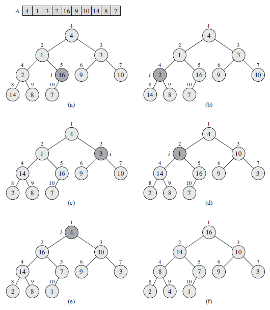
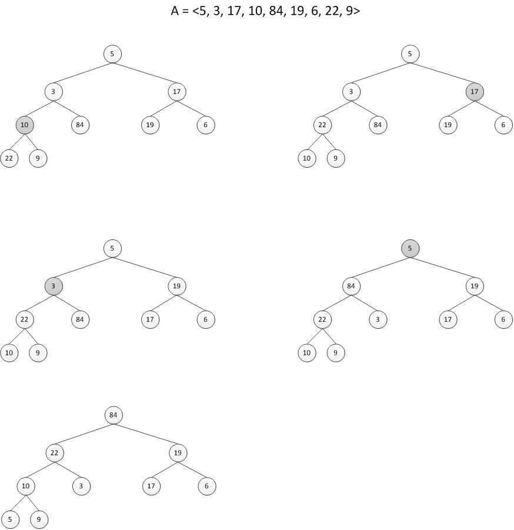

Summary
BUILD-MAX-HEAP(A)
A.heap-size = A.length
for i = ⌊A.length/2⌋ downto 1
MAX-HEAPIFY(A,i)

Figure 6.3The operation of BUILD-MAX-HEAP, showing the data structure before the call toMAX-HEAPIFY in line 3 of BUILD-MAX-HEAP.
Running time : O(n)
Exercises
6.3-1
Using Figure 6.3 as a model, illustrate the operation of BUILD-MAX-HEAP on the array A = <5, 3, 17, 10, 84, 19, 6, 22, 9>.

6.3-2
Why do we want the loop index i in line 2 of BUILD-MAX-HEAP to decrease from ⌊A.length/2⌋ to 1 rather than increase from 1 to ⌊A.length/2⌋?
⇒ 1부터 시작하면 정렬이 제대로 되지 않는다.
6.3-3
Show that there are at most ⌈n/2h+1⌉ nodes of height h in any n-element heap.